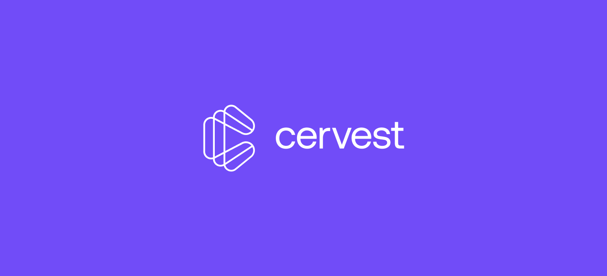

I currently work at Cervest, leading the product innovation design team at Cervest’s EarthLab, defining the tools that will help people assess their risks and create adaptation strategies to the climate emergency.
Previously, I was at Vizzuality, where I worked in the fascinating worlds of biodiversity and equality, and discovered a love for data visualization and the determination to use my design powers for a greater good.
Before that, I worked as a UX designer at Designit, where I first learned the design craft and the importance of putting real people at the front of every design decision.
All my life I’ve been lucky to turn my creative passions into realities and have an unusual background in music, both building guitar amplifiers and playing in a band.
Product DesignWorld Resources Institute, Vizzuality, 2017 – 2020
Role: Lead Designer
Global Forest Watch is the world–leading web–mapping application to track deforestation everywhere on Earth using satellite data. It is a combination of tools that empower people to better protect forests.
I have a special affection for this project because this is where I honed my skills as a data visualization designer.
I was involved in all phases of the design process, including remote user interviews, client communication and ideation workshops, and contributed solutions to critical sections of the web app, such as the interactive map, the country dashboards, and the blog.
In my years in the project, we were continuously iterating on the responsive map interface, which is the flagship element of the application, by periodically engaging with the end-users to inform our design decisions and be able to support our choices with research and data.
The country dashboards section of Global Forest Watch features global and country stats and deforestation-related information. Below are some data visualization widgets I have helped create for the country dashboards in collaboration with the data science team: line charts, lollipop charts, histograms, bubble charts, Sankey diagrams, and flow maps.
I also contributed to redesign the blog section, for both desktop and mobile, aiming for a pleasant multilingual reading experience. We paid special attention to accessibility issues, printing styles and readability in this redesign.
Product Design Cervest, 2021 – Present
Role: Senior Product Designer
At Cervest, we are building a category-leading platform to track and quantify climate risk at the asset level.
I lead the product innovation design team at Cervest’s EarthLab. EarthLab serves a zero-to-one function within Cervest, that focuses on the R&D of strategic innovations.
I’ve been heavily involved in Cervest’s funding rounds, leading the design of product prototypes that showcase upcoming use-cases and advanced future product capabilities that have played a vital role in the conversations with investors, resulting in a successful $30 million Series A funding round.
In my first months at Cervest I was part of the Product team where I have contributed my expertise in interaction design, GIS, and data visualization projects that helped the team build —in record time— a clean and easy-to-use MVP that set the EarthScan product foundations.
The details of this work are under an NDA.
Design coordinationE.O. Wilson Biodiversity Foundation, Vizzuality, 2019
Role: Lead designer, Design coordination
Conceived by E.O. Wilson, Half-Earth is a call to conserve half the Earth’s land and sea to manage sufficient habitat to safeguard the bulk of biodiversity.
In this project, we worked with the E.O. Wilson Biodiversity Foundation, Map of Life, and Esri to construct an interactive globe depicting the diversity of life on Earth and answer E.O. Wilson’s call to action to commit half of the planet’s surface to nature.
As well as contributing to the design of the interactive platform, I had the privilege of coordinating the work of two of my favorite designers, the multitalented Estefanía Casal and Esri’s own mapgician John Nelson, who created the most fantastic experience of fun and collaborative cartography: the Half-Earth vibrant map.
To celebrate the outcome of our work, the Half-Earth map was then added to Esri's catalog of basemaps to be enjoyed by happy designers and geographers in the future.
Product DesignOlympic Broadcasting Services, Designit, 2017
Role: Lead designer, Project coordination
Olympic Broadcasting Services (OBS) is the host broadcast organization for the Olympic and Paralympic Games. TV networks worldwide rely on their information throughout the preparations and during each Olympic and Paralympic Games.
In this project, we completely redesigned the broadcaster user experience to make it easier to view, search, edit, organize and re-use media files such as documents, venues and stadiums plans, technical manuals, photos, broadcast-quality videos, etc.
I was also responsible for project managing tasks and communicating with the client.
We conducted several internal OBS and broadcaster interviews to understand their needs and expectations better. We analyzed the content of their existing website and performed desk research to identify further opportunities. Then we held a workshop with the client to share the analysis and insights from the Research phase, co-create the variables and share the principles to guide the new design.
We then distilled the shared vision we had co-created with the client into simple, easy-to-understand concepts and reusable design patterns. We generated the main screens for all the different resolutions and the related documentation to help convey our design decisions to the client. We communicated the interaction details using low-fidelity prototypes.
In the visual phase, we applied the Olympic brand and colors to all key screens for both desktop and mobile. We created the products’s design system, low and high fidelity prototypes and support guidelines and files for developers. We did this for both the private site (only accessed by TV professionals) and the public site, aimed at the general public.
Side projectFaustone, 2006 – 2012
Role: Everything!
During my music years, I started a guitar amplifier business. It felt good to build and deliver actual products you could touch, smell and play with. I learned a lot about product design, industrial design, running my own business, and dealing with providers, distributors, and end-users.
When I no longer had the time to build these boxes, I open-sourced the schematics for anyone to try their own.
A while ago, I made a website about it you can still visit at faustone.com.